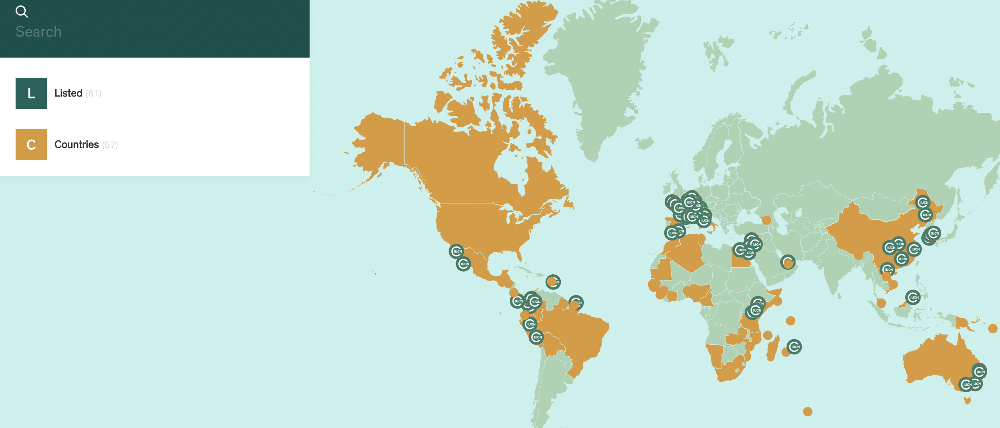

Safelane
Safelane
The International Union for Conservation of Nature is an international organization working in the field of nature conservation and sustainable use of natural resources. It is involved in data gathering and analysis, research, field projects, advocacy, and education.
My Work
Conducted data analysis for protected areas in China in IUCN Green List Program.
Performed data extraction and cleaning of Mt. Huangshan Protected Area of China to assess its performance in the governance, resource allocation, and monitoring system.
